Module's Selected Major Components
This page outlines the main components selected for the I2C ToF sensor module, starting with the supporting power, sensing, and indicator components used in the design and ending with the selected microcontroller ESP32.
Power Management
3.3 V Regulator
| Component | Pros | Cons |
|---|---|---|
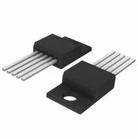 LM2575T-3.3G link to product |
* fixed 3.3V output * wide input range * stable current for components |
* needs inductor + caps * layout must be clean |
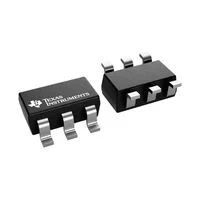 TPS560430X3FDBVT link to product |
* fixed 3.3V output * simple style * small footprint |
* needs inductor + caps * layout needs to reduce noise |
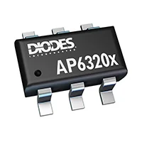 AP63203WU-7 link to product |
* fixed 3.3V output * alot of current * common part |
* needs inductor + caps * requires good PCB layout |
{kind=link}
{kind=link}
{kind=link}
Barrel Jack
| Component | Pros | Cons |
|---|---|---|
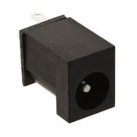 PJ-006A (2.1mm) $0.95/each link to product |
* standard 2.1mm adapter size * through hole * availability * rated above 9V |
* tough footprint * vertical |
 PJ-006B-SMT-TR (2.1mm) $0.95/each link to product |
* standard 2.1mm plug * surface mount * clean pcb layout |
* small footprint |
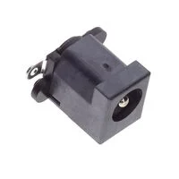 KLDVX-SMT-02-BTR (2.1mm) $1.40/each link to product |
* Vertical orientation option * surface mount |
* Larger footprint * Slightly higher cost |
{kind=link}
{kind=link}
I2C Sensor
| Component | Pros | Cons |
|---|---|---|
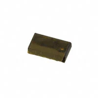 VL53L0CXV0DH/1 link to product |
* widely used ToF sensor * works directly at 3.3V * good for 2-6 ft detection |
* Small * Requires good PCB footprint |
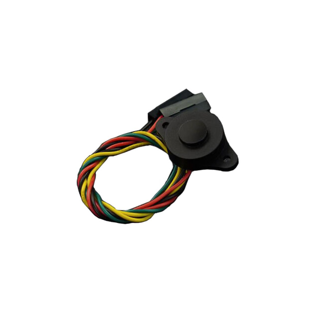 SEN0590 link to product |
* good range capability * easy soldering * 3.3V compatible |
* compact 4 pin * wired |
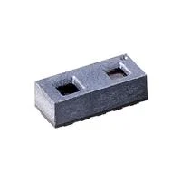 TMF8821 link to product |
* multi zone detection * 3.3V compatible * fits requirements |
* small * Requires good PCB layout |
{kind=link}
{kind=link}
{kind=link}
LED Debug Light
| Component | Pros | Cons |
|---|---|---|
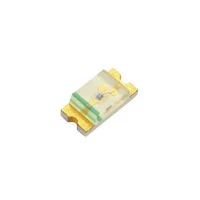 LTST-C150GKT (Green LED) link to product |
* easy to solder * good for power/status indicator *low current draw |
* requires series resistor |
 LTST-C150KRKT (Red LED) link to product |
* visible error/stop indicator * low voltage * easy solder size |
* requires series resistor |
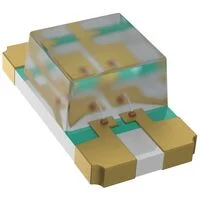 LTST-C150TBKT (Blue LED) link to product |
* clean look * good for activity/comms indicator * easy to solder |
* slightly higher voltage |
{kind=link}
{kind=link}
Microcontroller
Below is my selected microcontroller, for a more detailed explanation please visit the Microcontroller Selection Page.
| Component | Pros | Cons |
|---|---|---|
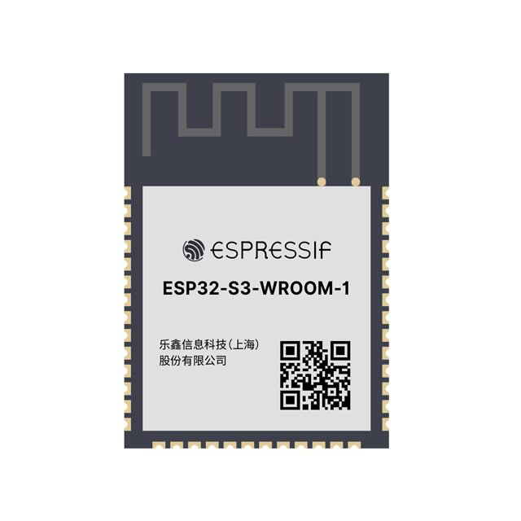 ESP32-S3-WROOM-1-N4 link to product |
* ESP32 used in class * easy to use * peripherals for I2C and UART |
* needs good decoupling and 3.3V rail * small PCB layout |
{kind=link}
Final Components Selection
| Main Components Chosen | Purpose | Reason Chosen |
|---|---|---|
| PJ-006A (2.1mm) | 9V power input | standard 2.1mm adapter size, through hole mount, and reliable for 9V input |
| LM2575T-3.3G | 3.3V voltage regulation | fixed 3.3V output and used in class |
| SEN0590 | Distance sensing (I2C) | good integrated sensor that works directly at 3.3V and fits the 2ft to 6ft detection range, not complex to solder |
| LTST-C150KRKT | Debug/status indicator light | visible and low voltage LED that is easy to solder and works well on 3.3V systems |